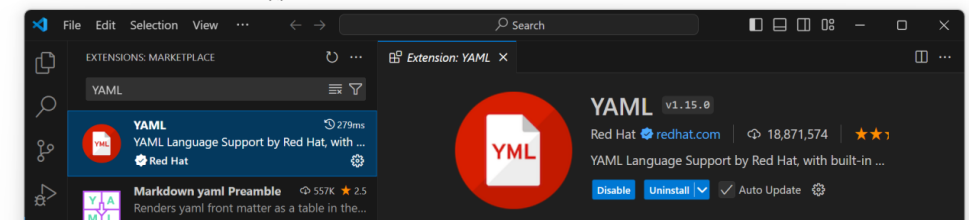

OpenAPI Presentation
OpenAPI is a specification for building APIs. It allows developers to define APIs in a machine-readable format, making it easier to automate and interact with them.
In fact, there are a number of tools that can help us create, edit, and manage API documentation when working with the OpenAPI specification, each with its own unique advantages. Swagger Editor is the official OpenAPI editor of choice, offering rich features, support for YAML and JSON formats, and a real-time preview of API documentation, making it ideal for writing and testing APIs. However, we can still work on the downloaded vscode text editor to write OpenAPI documentation. In order to better edit the OpenAPI documentation (whether in YAML or JSON format) in VSCode, it's a good idea to install some relevant extensions.
Here are some of the extensions I recommend installing and how they perform:
Features: Provides syntax highlighting, formatting, autocomplete, and syntax checking for YAML files. How to install: Type YAML in the search box, find the YAML extension, which is usually provided by Red Hat, and click Install.
OpenAPI is a specification for building APIs. It allows developers to define APIs in a machine-readable format, making it easier to automate and interact with them.